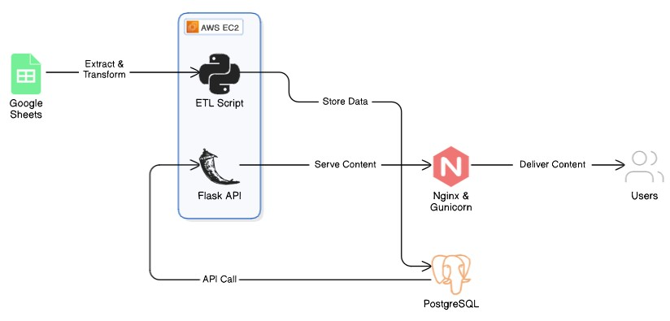

API.VintageData.IO
This project is an ETL (Extract, Transform, Load) pipeline designed to process match results for Vintage tournaments on Magic Online (MTGO).
See GitHub Repository.
Process
- Extract data from a publicly maintained Google Sheet.
- Clean & Transform tournament results, matchups, and deck information.
- Load structured data into a PostgreSQL database.
- Deploy a public REST API for querying match results and event information.
The ETL code is stored as a Python script and scheduled to run weekly using cron on an EC2 instance. The script pulls data from a public Google Sheet, cleans and transforms it, and then loads it into a PostgreSQL database hosted on Amazon RDS.
Data Source
MTGO Vintage Metagame Data: Public Google Sheet with community-collated tournament results, matchups, and deck archetypes.
Architecture
This project is deployed in AWS using an EC2 instance and Amazon RDS (PostgreSQL) database.

Architecture Diagram
Database Schema
The data is loaded and stored in a PostgreSQL database with the following tables:
| Table Name | Description |
|---|---|
| EVENTS | Captures individual tournament events. |
| EVENT_REJECTIONS | Tracks rejected events and reason text. |
| MATCHES | Stores match results, player deck IDs, and outcomes. |
| MATCH_REJECTIONS | Tracks rejected matches and reason text. |
| EVENT_STANDINGS | Returns the final standings and player ranks of an event. |
| RANK_REJECTIONS | Tracks rejections event standings records and reason text. |
| VALID_DECKS | Classification table storing valid deck archetypes. |
| VALID_EVENT_TYPES | Classification table containing valid event type names. |
| LOAD_REPORTS | Logs ETL process execution details. |
| API_LOGGING_STATS | Logs API endpoint usage statistics. |
See Data Dictionary for feature definitions.

Entity-Relationship Diagram (ERD)
API Development
A REST API was developed using Flask and deployed using an EC2 instance, which is configured to serve requests through Nginx and Gunicorn. The API provides HTTP endpoints for querying processed match results and event data.
See API Documentation for API Endpoint usage instructions.
×